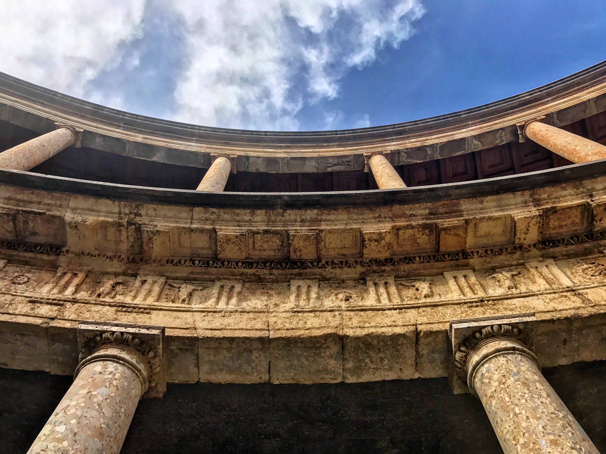
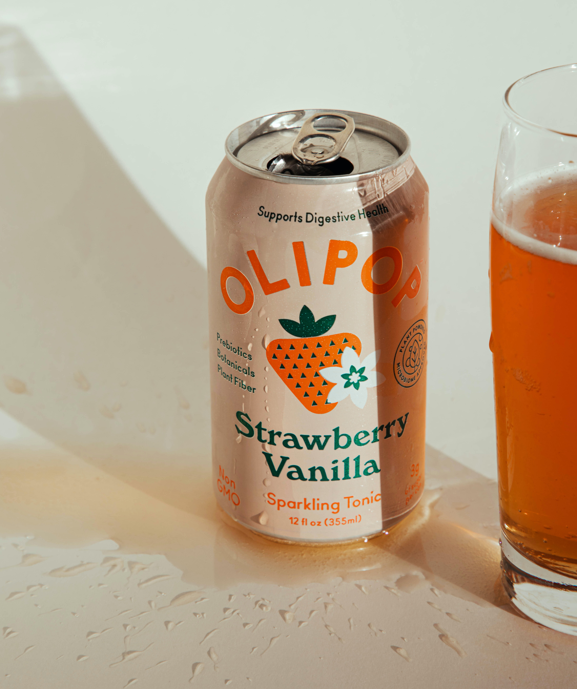
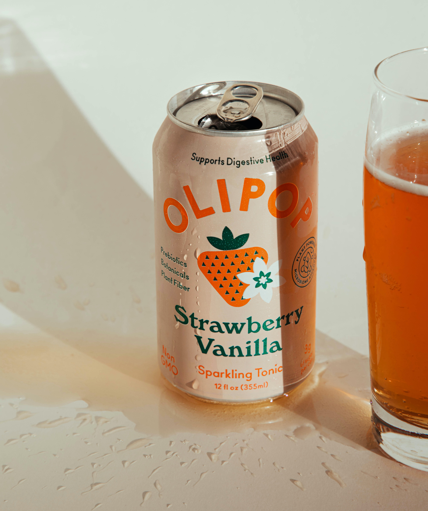
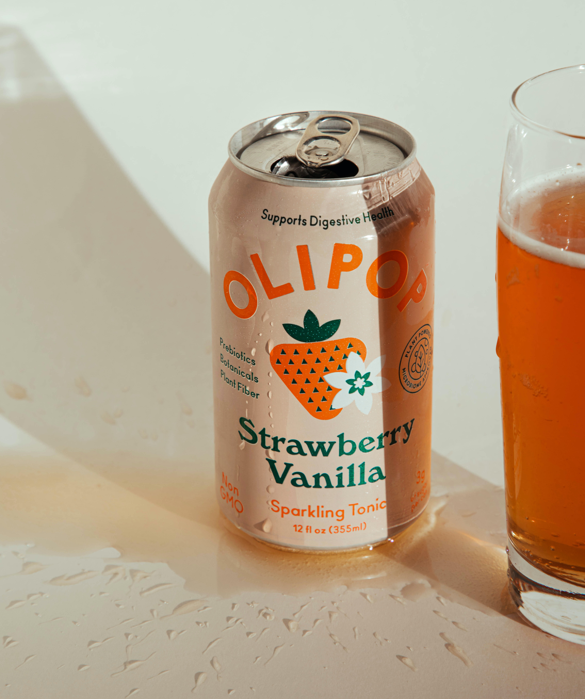

Image Carousel Library
Welcome
- Javascript Assignment
- Built using CSS and JS
- Plug-n-play usage
- Easy navigation
- Ships with customizable modifiers

 


How to
- Copy and link js and css files
- wrap images inside two parents
- add external class 'carousel'
- add internal class 'carousel-content'
- set width and height to external parents
- that's it!
Introduce Automation
- add 'autoscroll' class
- enables automatic scrolling
Set your pace
- add 'hold-X' class
- sets 'X' delay in seconds
- sets in-between hold time
- Eg: hold-1, hold-4
Like things backward?
- add 'left-autoscroll' class
- reverses autoscroll direction
Don't need buttons?
- add 'no-buttons' class
- removes left/right buttons
- navigation only using leaders
Devoted to Minimalism?
- add 'minimal' class
- stips buttons and leaders
- removes user control
- adds autoscrolling